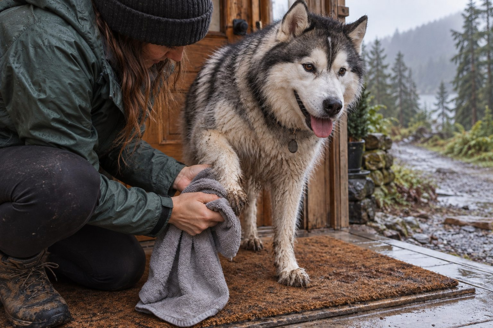

Wipe or rinse dirty paws after a walk and dry carefully between the toes.
Paws can collect mud, grit, road salt, and plant material. Cleaning them does not have to mean a full bath. A few calm minutes at the door protect your floors and give you a chance to check for a painful spot.
Make a paw station by the door
Keep a soft towel, a bowl of lukewarm water, and treats within reach. Ask your dog to stand on a nonslip mat. Lift one paw at a time and look between toes and around nails before wiping the pad.
A damp cloth is enough for light dirt. For heavy mud, rinse with water and dry thoroughly. Avoid strongly scented cleaners and do not scrub an already sore area.
Make the cleaning station easy to use on the busiest day, not just the tidy one. A nonslip mat, washable towel, small container of lukewarm water, and place for used cloths can live near the door. If your dog enters from a shared hallway, keep the kit compact enough to carry. The goal is to remove grit before it travels through the home while giving the dog a predictable pause. A hurried scramble for supplies can turn a simple wipe into a stressful struggle.
Check each paw before you wipe. Look between the toes and around the nails for pebbles, burrs, or packed mud. A dry walk may require only a quick inspection; an abrasive scrub would add no benefit. For light dust, use a damp cloth and then a dry towel. For thick mud, let water loosen it instead of rubbing it into the coat. Make sure the dog can stand securely and reward a calm moment before moving to the next foot.
Match care to the weather
Rain leaves moisture between toes; winter walks may leave de-icing salt; hot pavement can irritate pads. Check conditions before a walk and clean away residue afterward. Paw boots can help some dogs if fitted properly and introduced gradually.
If your dog limps, has a cracked pad, or seems painful when touched, do not force cleaning. Ask your veterinarian how to care for the paw.
Weather changes what deserves attention. Winter sidewalks can leave de-icing material on feet, so a rinse may be preferable to a dry wipe. Dry carefully afterward, including between toes. On hot days, prevention comes first: choose cooler walking times and safer surfaces rather than assuming a post-walk wash can repair a burned pad. After a rainy outing, moisture may be the main concern. Check that fur between toes is not staying wet under a boot or dense coat.
Trail walks bring a different set of problems. Long grass can leave seeds or burrs, and rough ground can cause small cuts. Remove only loose material you can see easily; a deeply embedded object or painful paw needs a professional assessment. If the dog limps, repeatedly lifts a foot, or resists touch, do not continue routine wiping as if nothing happened. Examine what you can safely and call your veterinarian for advice.

Help your dog enjoy the routine
Practice brief paw touches when your dog is relaxed and reward each one. Build toward a wipe only when handling feels easy. Many dogs accept a predictable small task better than an abrupt scrub after an exciting walk.
Wash and dry towels regularly. Check nails during the same routine and note any redness, swelling, or unusual licking that continues after the paw is clean.
Teach paw handling on days when the paws are already clean. Touch one leg, give a reward, and release. Repeat until the dog expects a calm, brief interaction. Then touch a paw, lift it for a moment, and eventually introduce the cloth. Practice one foot at a time. A dog that chooses to remain on the mat is easier to clean than one held in place. Avoid grabbing a foot while the dog is balancing precariously on three legs.
If your dog is older or has joint discomfort, wipe paws while the dog stands in a supported position or lies comfortably. The routine should adapt to the animal, not the other way around. Children can help by bringing a towel but should not restrain a worried dog. If handling suddenly becomes difficult, consider whether a paw, leg, or back is sore. A new resistance is useful information, especially when paired with licking or a change in gait.
Match the cleanup to the walk
| Walk conditions | Paw care |
|---|---|
| Clean, dry pavement | Inspect for grit; wiping may not be needed. |
| Mud or winter de-icer | Rinse gently with lukewarm water and dry between toes. |
| Trail grass or rough ground | Look for loose seeds, cuts, and a change in gait. |
Limping or an embedded object changes the task from cleaning to seeking help.
Keep it practical
Not every walk calls for soap. Water, drying, and a careful look often do the job. If a residue is hard to remove or the paw stays irritated, seek veterinary guidance rather than trying several household products.
Keep products simple. Plain lukewarm water is enough for many messy walks. If a cleanser is needed, use one appropriate for dogs and rinse it off as directed. Fragranced wipes and repeated soap can irritate sensitive skin. A towel should be washed and dried regularly; a damp, dirty cloth transfers debris back onto the feet. Clean boots according to their instructions and check that they fit without rubbing. Paw care is as much about leaving the skin dry and comfortable as it is about removing visible dirt.
Track recurring trouble. If one foot is always red, if pads crack, or if the dog chews between toes despite gentle cleaning, ask your veterinarian to examine it. A routine can reveal a problem early because you see the feet every day. It cannot diagnose or treat an underlying condition. Take a photo when you first notice a change so you can tell whether it is improving.
Practical details
Match the cleaning method to the mess
A dry walk on clean pavement may need only a quick inspection. Light dust comes off with a damp cloth. Thick mud is easier to rinse in a shallow container of lukewarm water than to scrub into the fur. Use soap sparingly and only when a suitable dog-safe product is needed. Thorough rinsing matters because residue left between toes can irritate skin.
Long hair around the feet can trap dirt. Ask a groomer about safe trimming if this is a frequent problem, rather than cutting close to delicate paw skin yourself. Dry each paw with a soft towel, including the spaces between toes. A damp pad that stays wet under a boot or in a thick coat may become uncomfortable.
A one-minute arrival routine
Pause on a nonslip mat and let the dog settle before handling a paw.
Check the pad and between toes for grit, burrs, and small stones.
Wipe with a damp cloth or rinse heavy mud with lukewarm water, then dry carefully.
Offer a reward, wash the towel, and make a note of any redness or limping.
Seasonal hazards require different checks
After winter walks, look for grit and de-icing residue. Rinse when needed, then dry fully. Ask your veterinarian about appropriate paw protection if salt repeatedly irritates your dog. In summer, test pavement temperature with your hand before walking; cleaning after a hot-surface injury is not a substitute for avoiding the heat in the first place.
Rainy weather means more moisture than dirt. A towel at the door may be enough, but inspect for softened skin or redness if paws stay damp. Plant seeds and burrs can hide in fur, especially after grass or trail walks. Remove only loose material you can see easily; if something is embedded or the dog is painful, contact a veterinarian.
Teach the routine as a small habit
Some dogs accept paw wiping immediately, while others need practice. Start on a clean, dry day. Touch one leg, reward, release; then touch a paw, reward, release. Build up to one quick wipe. This teaches the dog what will happen before you need to clean muddy feet. Keep the pace slow enough that the dog is able to cooperate.
If a dog suddenly resists a paw that was previously easy to handle, check for injury rather than assuming stubbornness. A calm routine should not require restraining or chasing the dog. Store supplies where you can reach them before opening the door, so the cleaning task does not turn into a scramble through the house.
For a household with several walks a day, choose a routine that can be repeated without resentment. A thirty-second check after a clean walk and a longer rinse after a muddy one may be more realistic than a full wash every time. Keep spare towels where family members can find them. Agree on what to record: limping, a cut, a stubborn burr, or unusual licking. Consistency helps everyone notice a change instead of assuming another person already checked.
Review the setup when the season turns. Move the kit closer to the entrance used in winter, replace worn towels, and reconsider whether paw boots or route changes would prevent the mess. If an outing ends with a painful or swollen paw, stop the cleaning routine and seek guidance. The best paw station is a small preventive habit that also makes it easier to spot the day when a paw needs more than a wipe.
Make seasonal checks specific. After a city walk, look for pavement grit and any de-icing material. After a trail, check between toes for plant debris and examine the pads for small cuts. After rain, focus on thorough drying. This targeted approach is faster and gentler than scrubbing all four feet with soap after every outing. If you use boots, inspect the skin where the boot contacts the leg. Rubbing or trapped moisture can create its own problem. A dog that repeatedly refuses one boot may be telling you the fit is wrong.
Keep the routine positive even when you are in a hurry. Ask the dog to pause on the mat, clean one foot, and reward. If the dog cannot stand comfortably, adjust the position. A caregiver should know that limping, swelling, a stuck object, or broken pad changes the job from cleaning to seeking advice. Document a new injury with a photo before applying any product. When the paws are healthy, the routine should feel ordinary: inspect, remove the actual mess, dry, and let the dog return to rest.
Set up a simple doorway station
Keep a clean towel, a small bowl of water, and a dry cloth near the door. Ask your dog to pause on a mat, lift one paw gently, and wipe visible mud away without scrubbing. Check the pads and the spaces between toes for grit, burrs, salt, or small cuts. When the paws are clean, dry them carefully before your dog runs across slippery flooring.
On rainy days, swap the towel after several walks so you are not rubbing old dirt back onto the coat. In winter, pay particular attention to material picked up from sidewalks. If a paw is sore, swollen, or suddenly held up, stop the cleaning session and seek veterinary advice rather than pulling at anything embedded. The goal is a quick, comfortable inspection that your dog will accept every day.
Build the habit gradually if your dog dislikes paw handling. Touch a shoulder, then a leg, then a paw, rewarding each relaxed step. A predictable routine helps you spot a change early: one paw that is suddenly sensitive, a new odor, or repeated licking after the walk. Keep the station practical rather than elaborate; consistency matters more than special equipment.
Continue exploring
For a broader routine, read How Often Should You Bathe Your Dog?, How to Clean Your Dog's Ears Safely at Home, and How to Brush a Dog's Coat Without Pulling.
Frequently Asked Questions
Do I need to wash paws after every walk?
Check them each time; wash when dirt or irritating residue is present.
Can I use baby wipes?
Some contain fragrance or other irritants. Plain water or a pet-safe product is a better first choice.
Why is my dog licking paws after walks?
Irritation is one possibility. Persistent licking warrants veterinary advice.
Editorial references
These resources informed the general guidance in this article. They do not replace advice tailored to your pet.
This guide offers general information. Your pet’s age, health, and history may call for a different plan. For medical concerns, ask your veterinarian.